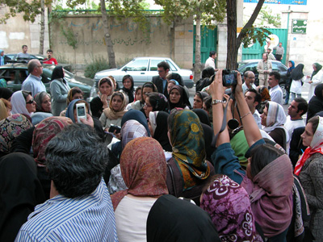

|
|

یک سال پر امید با کمپین: گزارش عملکرد کمیته های کمپین در سال گذشته
مریم حسین خواه / عکس : راحله عسگری زاده
شنبه10 شهریور 1386

کمپین یک میلیون امضا برای تغیر قوانین تبعیض آمیز، حرکتی که قرار بود خواسته های زنان این دیار را به خیابان ها و کوچه پس کوچه های آن ببرد، 5 شهریور 1385 از خیابان و روبروی درهای بسته موسسه رعد، با نویدی نو برای ساخت دنیایی بهتر، آغازید. این حرکت در ادامه تلاش خود، و در پیچ و خم کوچه ها، هر بار فضایی جدید را تجربه می کند و در کنار همه ی سختی هایی که در پیش رو دارد، راه های جدیدی را می آفریند.
در یکسال گذشته، مسیری که پیش روی کمپین قرار داشت مسیری پر دلهره، اما پر از امید بود چرا که هر روز شاهد گسترش کنشگران تازه نفسی بود که این جنبش را هرچه پویاتر و پرمعناتر می ساخت، جنبش حقوقی که از 22 خرداد سال 84 آغاز و در 22 خرداد سال 85 تثبیت شد و با برپایی کمپین یک میلیون امضاء استمراری روزمره یافت.
کمپین از دل تجربه های جنبش جهانی زنان سر برآورد و خود ابتکارات جدید و تجربه هایی نو را بر آنها افزود. طرح یک میلیون امضای مراکش با روشی نو، "چهره به چهره " در آمیخت و توانست در این مدت کوتاه جبران نداشتن دسترسی به امکاناتی چون رسانه های رسمی را بکند و هر فرد را از درون، به یک رسانه جمعی تبدیل کند؛ رسانه ای که تنها واگویه ی یک طرفه نیست بلکه می تواند به مخاطبان خود گوش سپارد. در این کمپین که با هدف رشد آگاهی، چه در مخاطبان و چه در کنشگران، گفتگوی چهره به چهره با زنان و ارائه دفترچه های "تاثير قوانين بر زندگي زنان" (دفترچه هایی که از 22 خرداد 85 پخش آن آغاز شد) ، به عنوان شیوه ای نو به کار می رود، با هر امضای مرد و زنی که بر پای بیانیه می نشیند، به تعهد کنشگران آن در رسیدن به خواسته ها، می افزاید و آنها را مصمم تر می سازد. اکنون در نخستین سال از تلاشمان برای جمع آوری امضا و عمومی کردن خواسته های مان، درمی یابیم که این حرکت جمعی، از آنچه می اندیشیدیم، بسیار فراتر رفته است.
ابتدا با 6 کمیته (رسانه، آموزش، مستندسازی، انتشارات، روابط عمومی، و مالی) کار خود را آغاز کردیم. اما ساختار منعطف و نامتعارف کمپین از یک سو، و سربرآوردن نیازهای جدید حین عمل از سوی دیگر، گسترش آن را به همراه داشت. با گسترش داوطلبان کمپین، نیاز به ایجاد گروه جدیدی برای هماهنگی آنها، احساس می شد. و این گروه، با نام داوطلبان شروع به کار کرد. در عین حال مشکلاتی که داوطلبان جوان حین کار با آن روبرو بودند، حمایت خانواده هایشان را طلب می کرد. به این ترتیب کمیته مادران کمپین متولد شد. در پی بالارفتن مشارکت مردان در کمپین، گروه پسران تشکیل شد و کمیته جمع آوری امضاء نیز با هدف سازمان دادن جمع آوری امضاء به صورت دسته جمعی شکل گرفت، اما گروه های کوچک تری نیز از آن سر بیرون آورد، مانند کمیته برگزاری کارگاه های آموزشی مختلف، کمیته خبرنامه ..
ایمیل کمپین یک میلیون امضا برای تغییر قوانین تبعیض آمیز: forequality@gmail.com
اساس کار کمپين بيش از هر چيز آموزش و ايجاد ارتباط با لايه هاي گوناگون اجتماعي بوده است. به همین دلیل از ابتدا کارگاه هایی برای آموزش داوطلبان کمپین به منظور جمع آوری امضا، طراحی شد. در کارگاه آموزشي، داوطلبان سه نوع آموزش می بینند: معرفي کليات طرح کمپين يک ميليون امضا براي تغيير قوانين تبعيض آميز، آموزش حقوقي( شامل توضيح مفاد مطرح شده در دفترچه هاي حقوقي و همچنين پاسخ به پرسش هاي شرکت کنندگان)، و سرانجام آموزش چهره به چهره براي آشنايي با نحوه برخورد با مردم هنگام جمع آوري امضا.
در این کارگاه ها که مسئولیت آموزش بر عهده گروه آموزش است، جزوه های آموزشی چهره به چهره و دفترچه های حقوقی به داوطبان داده می شود و از آنها می خواهیم که تجربه های خود را حین جمع آوری امضا بنویسند. اين گروه ابتدا با 6 نفر کار خود را آغاز کرد، اما به تدريج با افزايش تعداد داوطلبان جمع آوري امضا و افزايش تعداد کارگاه هاو سمينارها در تهران و شهرستان ها، گروه آموزش تعداد تسهيل گرانش را افزايش داد. از ابتدای آغاز به کار کمپین تا کنون تقربيا هر هفته يك كارگاه در تهران برگزار شده است.
برگزاري کارگاه هاي آموزشي در شهرستان ها غالبا پس از آشنايي با کمپين و يک دوره جمع آوري امضا صورت مي گيرد. تاکنون کارگاه آموزشی در 12 شهر گرگان، تبریز، سنندج، مشهد، قم، کرمانشاه، رشت، زنجان، کرج، همدان، زاهدان و یزد برگزار شده است. اما برگزاری کارگاه ها در برخی از شهرستان ها بخشی به دلیل کمبود نیروی آموزشگر و همچنين مانع تراشي دستگاه هاي امنيتي از طريق تهديد و ارعاب اعضاي كمپين در شهرستان ها معطل مانده است.
همچنین کمیته آموزش این توانایی را دارد که در صورت هماهنگی با اشخاص و کمیته پیگیری اقدام به برگزاری کارگاه های غیر رسمی كند. کارگاه های غیر رسمی در حقیقت کارگاه هایی هستند که به پیشنهاد اشخاص برای دوستان نزدیک یا اقوامشان برگزار می شود. این جلسات باید با هماهنگی کامل کمیته آموزش و کمیته داوطلبان و پیگیری برگزار گردد تا توسط هر سه کمیته قابل پیگیری باشد.
در يكسال گذشته بيش از 400 نفر در كارگاه هاي تهران آموزش ديده اند. حداقل افراد شركت كننده در هر كارگاه 10 نفر بوده و تعداد شركت كنندگان در برخي كارگاه ها به 40 نفر هم رسيده است.علاوه براين در كارگاه هاي غير رسمي كه به در خواست اعضاي كمپين برگزار شده است گاه شاهد حضور 60 نفر نيز بوده ايم.
کمیته آموزش هرماه یک جلسه درون گروهی دارد تا هماهنگی بیشتری بین اعضا برای برگزاری کارگاه ها به وجود بیاورد. در این جلسات برنامه ماهانه کمیته آموزش تنظیم می شود و اگر آموزشگری نتواند در کارگاهی که متقبل شده حضور یابد شخصا موظف به پیدا کردن جایگزین خواهد بود.
با توجه به میزان تقاضا برای تشکیل این کارگاه ها، به تعداد بیشتری از آموزشگران به ویژه آنان که توانایی سفر به شهرستان برای برپایی کارگاه در شهرهای دیگر را دارند (به خصوص وکلای آموزشگر)، وجود دارد. بجز بخش حقوقي که حقوقدانان آموزش آن را بر عهده دارند داوطلبان علاقه به کار در گروه آموزش مي توانند در بخش آموزش مهارت هاي لازم براي جمع اوري امضا فعال شوند. آنها در يک يا دو جلسه با نحوه کار آموزشگران قبلي آشنا مي شوند و در جلسات بعدي با نظارت آموزشگر قبلي، بخشي از کار آموزش را برعهده مي گيرند و در صورت آمادگي لازم براي اين کار، مواد آموزشي در اختيار آنها قرار مي گيرد تا از آن به بعد جلسات آموزشي را به تنهايي برگزار کنند .
داوطلبانی که علاقه به کار در گروه آموزش را دارند می توانند با ایمیل گروه آموزش:
1million.training@gmail.com تماس بگیرند.
متقاضیان عضویت در گروه آموزشی در يک يا دو جلسه با نحوه کار آموزشگران قبلي آشنا مي شوند و در جلسات بعدي با نظارت آموزشگر قبلي، بخشي از کار آموزش را برعهده مي گيرند تا زمانی که بتوانند به تنهایی از عهده کار برآیند.
« تغییر برای برابری» سایت کمپین ابزاری است برای اطلاع رسانی، تولید و انتشار ایده و نظر درباره کمپین یک میلیون امضا. کمیته رسانه در ابتدای تشکیل فاقد بخش بندی مشخص بود. علاقه مندان در پی ضرورت های اولیه در رسانه گرد هم آمدند و مسئولیت هایی را برعهده گرفتند، به تدریج با گسترش فعالیت کمپین،ضرورت ایجاد بخش ها، افزایش نیروها و همچنین تشکیل گروه های کوچک مطرح و تقسیم کار بر مبنای فعالیتها و بازتاب نیازهای کمپین در رسانه احساس شد. اعضای گروه رسانه درحال حاضر در بخش های خبر، مصاحبه، کوچه به کوچه، تریبون، ترجمه، پژوهش، گزارش، مشغول به فعالیت هستند. تا کنون سعی رسانه براین بوده که حداقل هفته ای یک بار ( گزارش ، مصاحبه ، تریبون ) ، تولید مطلب هر دو روز یک بار ( کوچه به کوچه ) ، تقریبا یک روز در میان ( سایت نوشته ها ) ، دو هفته یک بار ( ترجمه ) ، هفته ای حداقل دو خبر ( خبر) داشته باشد.
همزمان با آغاز به کار کمپین بخش کوچه به کوچه برای ثبت تجربیات داوطلبان جمع آوری امضا و دیگر اعضای کمپین راه اندازی شد. تهیه مطالب این بخش ابتدا برعهده گروه داوطلبان جمع آوری امضا بود اما به تدریج با جذب برخی از این داوطلبان به بخش رسانه این کار اکنون توسط رسانه انجام می شود با این تفاوت که مسئولان این بخش در ارتباط پیوسته با گروه داوطلبان هستند.بخش کوچه به کوچه می کوشد همان طور که از نام دفترچه های کمپین « تاثیر قانون بر زندگی زنان » بر می آید تاثیر قوانین را در زندگی روزمره زنان نشان دهد. در این بخش به دلیل تاکید بر ثبت تجربه های زنان در جمع آوری امضا، افرادی هستند که تجربه های بسیار دارند اما هیچگاه نتوانسته اند این تجربه ها را درقالب نوشته ثبت کنند، به این منظور برگزاری کارگاه های نوشتن برای داوطلبان ازجمله فعالیت های گروه کوچه به کوچه بوده است. افزایش تعداد مطالب ارسالی پس ازهر کارگاه از موثر بودن این کارگاه ها حکایت دارد. تا کنون 4 کارگاه نوشتن برگزار شده و برنامه رسانه برای دومین سال فعالیت کمپین برگزاری ماهی دو کارگاه برای داوطلبان و آموزشگران آتی این کارگاه هاست. طی یک سال اخیر بیش از 120 مطلب در این بخش منتشر شده است.
گروه ترجمه نيز به عنوان بخشی از فعالیت های گروه رسانه کمپین به انتشار تجربیات حقوقی و جنبشی زنان و همچنین تجربه زنان در برگزاری کمپین های گوناگون پرداخته است. ( طی یک سال اخیر بیش از 20 ترجمه از طریق این گروه منتشرشده است.)
وجود بخشی به نام تریبون یا مقالات، نقش مهمی در افزایش بارنظری و فکری روش هاو نگرش های موجود و برآمده در کمپین دارد. انتشار نقد، پاسخ گویی یا تحلیل نظرات مطرح شده درباره مطالبات کمپین و روش های بکارگرفته در آن، در این بخش مورد توجه است. جمع آوری، سفارش و پی گیری برای دریافت مقاله در حوزه نظری مرتبط با کمپین از جمله فعالیت های این بخش است. در واقع انتشار دیدگاه های نظری اعضای کمپین یا حامیان و حتی منتقدان کمپین از وظایف تریبون است. ( طی یک سال اخیر بیش از 60 مقاله در این بخش منتشر شده است)
تهیه گزارش از نشست های کمپین ( بیرونی و درونی)، شهرستان ها ، دادگاه ها ، ...مصاحبه با طیف های گوناگون اجتماعی، سیاسی، حقوقی، هنر، ادبی ....درباره قوانین ها یا کمپین، انعکاس اخبار مربوط به قوانین، مصاحبه های کوتاه درباره کمپین یا قوانین و تولید خبر در این زمینه از جمله فعالیت های بخش های گزارش، مصاحبه و خبر است. طی یک سال اخیر بیش از 40 گزارش ، 30 گفتگو و 200 خبر در سایت منتشر شده است.
گروه پژوهش اخیرا در رسانه آغاز به کارکرده است تا با تحقیق و پژوهش درباره موارد مطرح شده درمطالبات کمپین مانند قوانین طلاق، دیه ، شهادت ...و تاثیر آنها در زندگی زنان بر بار یافته های نظری کمپین بیافزاید . تشکیل این گروه تا حدودی برای تامین یافته های نظری در کمپین و ارائه آن به بخش تریبون و رفع کمبودهایی است که در گروه تریبون به چشم می خورد، نخستین فعالیت عملی این گروه انجام پیمایشی درباره شناخت شهروندان تهرانی از کمپین یک میلیون امضا طی یک سال گذشته بود.
بخش سايت نوشته ها نيز از ابتدای شروع کار رسانه در سایت راه اندازی شد. در این بخش مطالب منتشرشده در سایت ها، وبلاگ ها یا نشریات اینترنتی منعکس می شود. این مطالب درباره کمپین و مسائل حقوقی مربوط به زنان به ویژه موارد مربوط به مواد ذکر شده در بیانیه کمپین است . تاکنون بیش از 250 مطلب در این بخش منعکس شده است.
علاوه بر اين سايت تغيير براي برابري برنامه هايي نيز برای فعاليت خود در دومين سال كمپين دارد. تشكيل گروه هنري يكي از اين برنامه ها است.از آنجا که کمپین با توجه به مطالبات مطرح شده اش، پتاسیل ارتباط و جذب طیف های گوناگونی را دارد شکل گیری گروه هنری در رسانه برای آنکه بتواند نه تنها خلاقیت های بصری را برای نمایش مطالبات کمپین به کار گیرد بلکه با جذب هنرمندان به این حرکت اجتماعی ارتباط فعال بین جامعه هنری و کمپین برقرار کند. پیمایش، ارتباط رسانه ای، برگزاری میزگردهای جمعی، جمع آوری امضا به مثابه کاری درون گروهی و ارتباط فعالانه با کمیته ها از برنامه هاي در دست اجراي سايت تغيير براي برابري است. هر روز که بر عمر کمپین افزوده می شود , نیازها و خلاقیت های جدیدی سر بر می آورند که به رغم افزایش نیرو باز هم با کمبود نیرو مواجه می شویم.
تغيير براي برابري تنها سايت اينترنتي كمپين نيست . تاکنون 4 شهرستان تبریز، شیراز ، رشت و کرمانشاه سایت کمپین را راه اندازی کرده اند، ارتباط با شهرستان های فعال در این زمینه ، تشویق به برگزاری کارگاه های نوشتن در شهرستان ها و جذب و جلب فعالان کمپین به نوشتن سفرنامه و انتشار مقالات و گزارش های آنان در سایت البته در هماهنگی و ارتباط با کمیته شهرستان ها اختصاص بخشی به عنوان شهرستان ها را در سایت ضروری کرده است.
سايت به طور متوسط بین 800 تا 3 هزار بازدید کننده در روز دارد و تا کنون بیش از 700 نوشته در قالب مقاله، گزارش، مصاحبه، تجربه و خبر در مورد کمپين منتشر كرده است. مطالب جدید سایت تقریبا سه روز در هفته ازطریق خبرنامه اینترنتی برای همه ی اعضا و همچنین علاقه مندانی که برای دریافت خبرنامه کمپین ثبت نام کرده اند، ارسال می شود. به طور کلی در هر نوبت، حدود 4 هزار نفر خبرنامه سایت را دریافت می کنند و جالب آن که حجم وسیعی از بازدید کنندگان سایت را کسانی تشکیل می دهند که از طریق ایمیل باخبر شده اند. در این میان حامیان بسیاری هم داریم که ایمیل های ارسالی خبرنامه را برای دیگران ارسال می کنند. علاوه براين، سايت ها و وبلاگ هاي حامي کمپين، با قراردادن لوگوي کمپين در صفحه مجازيشان و همچنين انعکاس فعاليت هاي کمپين نقش عمده اي در شناساندن کمپين داشته اند. دراين ميان نقش راديو ها و سايت هاي خبري چون صداي آلمان، راديو فردا، صدای آمریکا، راديو زمانه، برابري، اخبار روز، ادوارنيوز، گويا، عصرما، ايران امروز، شهروند، کسوف، گزارشگران، روشنگری، پیوند، شهرزاد نیوز ، آوای زن، …,در انعکاس خبرها و همچنين مصاحبه با اعضا و حاميان کمپين در شناخته شدن کمپين و گسترش بحث حقوق زنان در جامعه تاثيرگذار بوده اند.
علاقمندان به همكاري با كميته رسانه می توانند با ایمیل گروه رسانه:
onlinewechange@gmail.com
تماس بگیرند.
با گسترش کمپین و داوطلبانی برای ترجمه متون به انگلیسی، آلمانی، ایتالیایی، اسپانیایی، فرانسوی و عربی، بخش جداگانه ای برای زبانهای دیگر در سایت طراحی شد و یک گروه کاری متشکل از فعالان کمپین در ایران و خارج از کشور در این بخش تشکیل شد. تاکنون مجموعا 135 مطلب در قالب خبر، گزارش، مصاحبه، مقاله، تجربه و بیانیه به زبانهای مختلف و عمدتا انگلیسی ترجمه شده است و حدود 15 داوطلب به صورت مداوم در ترجمه متون با سایت خارجی کمپین همکاری می کنند. اما کار بخش خارجی سایت تنها محدود به ترجمه نیست زیرا با جدا شدن بخش خارجی از بخش فارسی و امکان گسترش دامنه فعالیت آن اکنون گروه های کاری این حوزه در صدد افرایش بخش های گوناگون در این سایت و انتشار مطالب تولیدی درباره کمپین نیز هستند. به این ترتیب دیدگاه بسیاری از علاقه مندان کمپین یک میلیون امضا که با زبان فارسی نیز آشنایی ندارند (به ویژه نسل دوم مهاجران ایرانی در خارج از کشور) در این بخش منعکس و با ترجمه مطالب آنها به فارسی، ارتباطی دو سویه بین دو بخش سایت نیز برقرار می شود. سایت خارجی کمپین نیز امکانی را فراهم کرده که زنان فعال در سایر نقاط دینا به ویژه در کشورهای مسلمان از فعالیتهای زنان ایرانی در قالب کمپین یک میلیون امضاء و به منظور تغییر قوانین نا برابر مطلع شوند و به این شکل در ایجاد همکاری و تبادل اطلاعات بین زنان ایرانی و زنان فعال در کشورهای مسلمان و سایر جهان ارتباطی دو سویه ایجاد کرده. در همین راستا، دست آوردهای زنان در کشورهای در حال توسعه و مسلمان مورد توجه ویژه قرار خواهد گرفت و مبارزات آنان به صورت گزارش، مصاحبه و مقاله در سال آینده مورد استفاده سایت خارجی و فارسی کمپین قرار خواهد گرفت.
اعضاي کمپين پس از جمع آوري امضا، يا دريافت امضاها از داوطلبان جمع آوري امضا در تهران يا شهرستان ها و يا حتي خارج از ايران، آنها را به گروه مستندسازي تحويل مي دهند. گروه مستندسازي ضمن نگهداري آنها، اطلاعات مربوط به امضاها را براي انجام تحليل آماري وارد يک پایگاه اطلاعاتی مي کند. همچنين کمیته مستندسازی از تمامي برگه هاي امضا، پس از شماره کردن همه برگه ها و مهر کردن آنان، فیلم و اسکن کامپيوتري تهيه می کند، علاوه بر آن، از تمامی برگه ها یک فتوکپی گرفته می شود و هر یک از این نسخه ها در محل های مختلف نگهداري مي شود. در واقع تاکنون از کلیه برگه های امضاء های جمع آوری شده حداقل 3 نسخه اسکن شده (در سی دی) و یک نسخه کپی (علاوه بر اصل برگه ها) وجود دارد که در مکان های مختلف حفظ می شود. اما از آن جایی که طبق تصمیم اولیه، قرار است تا پایان جمع آوری یک میلیون امضاء، گزارشی از تعداد امضاء های جمع آوری شده و نام افرادی که امضاء می کنند به صورت عمومی و در رسانه ها مطرح نشود، از این رو کمیته مستندسازی تا جمع آوری کامل یک میلیون امضاء از دادن گزارش تعداد امضاء ها معذور است.
اما کمیته مستندسازی آن چنان که برای وظایف اش در نظر گرفته شده بود تنها وظیفه اش جمع آوری امضاء ها و آنالیز آن نیست. بلکه این کمیته وظیفه دارد روند حرکت کمپین را با جمع آوری اسناد و مدارکی که توسط کمیته های دیگر تولید می شود و نیز مهم تر از آن تولید اسناد و مدارکی که خود این کمیته به منظور ثبت چگونگی حرکت کمپین تولید می کند در حافظه تاریخی جنبش زنان ثبت کند. این کار با انجام مصاحبه های مختلف با کنشگران کمپین، ضبط روایت های مختلف زنانی که نمی نویسند اما روایت های شفاهی بسیاری دارند و ثبت تحلیل های مختلفی که فشارهای موجود در بین اعضای کمپین به وجود می آورد (بی آن که در سایت ها ثبت شود) و از این نوع ابتکارات و ایده هایی که می تواند حقایق پنهان و آشکار حرکت کمپین را در تاریخ جنبش زنان ثبت و ضبط کند. به هرحال این کمیته تاکنون توانسته است صرفا به جمع آوری مدارک و اسناد بپردازد و به دلیل کمبود نیرو هنوز به تولید اسناد نائل نیامده است. از این رو از اعضایی که ایده هایی در این زمینه دارند و مایل به همکاری با این کمیته به منظور به ثمر رساندن بخش تولید اسناد لازم برای ثبت حرکت کمپین هستند، می توانند با ایمیل این کمیته تماس بگیرند:
1million.documentation@gmail.com
همچنین برای تحویل دادن برگه های امضای خود در صورتی که در کمیته ای عضو نیستید و یا با اعضایی تماس ندارید نیز می توانید با ایمیل کمیته مستندسازی تماس بگیرید تا برای دریافت برگه های شما توسط گروه مستندسازی اقدام شود.
هدف کمیته روابط عمومی ایجاد رابطه با سازمان های مختلف زنان و معرفی کمپین به افراد و گروه های مختلف است. در واقع یکی از وظایف این گروه، جلب نظر گروه های مختلف و ان. جی. اوها و سازمان های گوناگون برای پیوستن به کمپین است.
این کمیته همچنين ترویج اهداف کمپین و حساسیت زدایی از فعالیت ها آن را در دستور کار خود قرار داده است. این کار از طریق شناسایی گروههایی که هر یک به نوعی در امر قانونگذاری و اجرای سیاست های راهبردی حوزه زنان دخیل هستند و همچنین فعالان حوزه های اجتماعی و زنان صورت می گیرد. ازجمله اساتید دانشگاهها قانونگذاران فعالان سازمان های غیر دولتی روزنامه نگاران فعالان سیاسی وحقوق بشر نویسندگان هنرمندان و فقها و...
این کمیته در سال قبل در راستای دستیابی به اهداف خود چند نشست با افراد و گروه های صاحب نظر و فعال در عرصه اجتماعی به منظور جلب همکاری و حمایت آنان داشته است. از جمله این کمیته دو نشست را با زنان اصلاح طلب برگزار کرد. رایزنی با هنرمندان و اساتید و برخی از نمایندگان مجلس و چهره های مذهبی و برقراری ارتباط با سازمان های غیر دولتی از دیگر فعالیت های این کمیته بوده است.
برقراری ارتباط با شبکه ارتباطی انجمن های غیر دولتی زنان و جلب حمایت هم اندیشی زنان از کمپین شرکت در جلسات زنان کار آفرین به منظور جلب حمایت آنان،شرکت در جلسات سازمان های بین المللی و برگزاری یک نشست اختصاصی با کارگروه جنسیت سازمان ملل که شامل نمایندگانی از تمامی ارگانهای سازمان ملل است از دیگر فعالیتهای کمیته بوده است. برگزاری نشست اختصاصی با فعالان زنان کشورهای مراکش بلژیک و ترکیه با برخی از فعالان کمپین و ایجاد فضایی برای تبادل تجربیات آنان با اعضای کمپین و ارائه سخنرانی در همین نشست در ایران و بلژیک و شرکت در همایش های خیابانی ایدز و سایر برنامه های مربوط به آن به منظور معرفی کمپین و جذب فعالان این حوزه از دیگر اقدامات کمیته روابط عمومی بوده است.
هماهنگی برای برگزاری نشست و سمینار از دیگر فعالیت هایی است که کمیته روابط عمومی با جدیت بیشتر قصد دارد به انجام برساند، اما متاسفانه تا كنون تلاش های این گروه برای یافتن مکانی عمومی برای برگزاری این سمینارها، خیلی با موفقیت همراه نبوده است. اين كميته بارها از فرهنگسراهای مختلف تقاضای محلی برای برگزاری سمینارهای خود را کرده بود که هر بار با جواب منفی روبه رو شده است. البته در سال آینده کمیته روابط عمومی قصد دارد با تکیه به امکانات اعضای کمپین نشستهای متعددی را برگزار کند.
برای عضویت در کمیته روابط عمومی با ایمیل این کمیته تماس بگیرند و این کمیته را یاری رسانند:
1million.publicrelations@gmail.com
فعالیت کمیته مالی پروژه کمپین "یک میلیون امضاء برای تغییر قوانین تبعیض آمیز" در تاریخ 1/5/85 با شرکت کمیته های مالی، آموزش، داوطلبان، روابط عمومی، هماهنگی، مستندسازی، رسانه و انتشارات شروع به کار کرد.
سرمایه اولیه و تنخواه به صورت حق عضویت از طرف اعضای اصلی کمیته های کاری برای پیشبرد اهداف کمپین پرداخت شد.
کمک های مالی بلاعوض توسط اعضاء و علاقه مندان پرداخت و جمع آوری و به کمیته مالی پرداخت شد. این کمک ها هیچ گونه وابستگی به شخص و یا سازمانی را در پی نداشته است. تمام کمک مالی و عضویت ها در انحصار پروژه است و برای پیشبرد پروژه هزینه می شود. سیاست کمپین بر این مبنا قرار گرفت که از گرفتن کمک مالی از سازمان های دولتی و بین المللی خودداری کند.
تمام اعضای پروژه در جمع آوری کمک های مالی شرکت فعال دارند و هزینه های انجام شده که هزینه اصلی کپی جزوات "تأثیر قوانین" می باشد تا کنون از طریق حق عضویت و جمع آوری کمک مالی اعضاء پرداخت شده است.
کمیته مالی سه ماه یکبار گزارش مالی را از طریق سایت و خبرنامه منتشر و به اطلاع اعضاء و عموم می رساند. ضمناً اعضای گروه آموزش برای مخارج سفر خود به شهرستان ها برای برپایی کارگاه ها تا کنون هیچ گونه پولی دریافت نداشته اند و کلیه مخارج را خود تقبل کرده اند.
پیشرفت پروژه مدیون امکانات و دانش و قابلیت های اعضای آن است که در اختیار پروژه قرار داده اند.
کمیته مالی سعی دارد در آینده با برپایی جشن و کنسرت، بازارهای گوناگون، نمایشگاه ها و ... کمک مالی بیشتری جمع آوری کند. از این رو از اعضایی که ایده و ابتکاراتی برای جمع آوری کمک مالی دارند یا می توانند این کمیته را برای برپایی برنامه هایی به منظور جمع آوری کمک مالی یاری رسانند، می خواهد تا با این کمیته تماس بگیرند.
ایمیل کمیته مالی :1million.mali@gmail.com
صورت ریز و اسامی کمک کننده و هزینه های سایت از روز افتتاح تا پایان شهریور 1386
حق عضویت ها به تفکیک کمیته ها به تومان
کمیته آموزش 76700
کمیته رسانه 20000
کمیته انتشارات 42500
کمیته مستندسازی 6000
کمیته مالی 72500
کمیته روابط عمومی 56000
کمیته داوطلبان 81000
کمیته هماهنگی 20000
جمع کل حق عضویت ها: 374700 تومان
جمع حق عضویت داوطلبان جمع آوری امضاء در کارگاه های آموزشی: 759700 تومان
کمک های فردی به کمپین: (به تومان)
خانم نقوی 16000
صدیقه مقدم 14000
هما مداح 30000
فاطمه دهدشتی و سمیه فرید 10000
مجموع کمک ها از اعضای صندوق دوستی 91500
مهشید نجفی و دوستش 100000
زهرا مفخم پناه 50000
طلعت تقی نیا 28000
رکسانا ستایش 5000
عذرا عباسی 20000
شیرین اردلان 10000
مهسا شکرلو 180000
ناهید میرحاج 87700
رضوان مقدم 50000
ژیلا مدنی 100000
افسانه نجم آبادی 100000
نگار نادری 10000
سیما سیاح 200000
نیلوفر پیمانی 2000
مریم ملکی 200000
سوسن طهماسبی 170000
نسیم سرابندی 10000
مریم بهرمندی (شیراز) 5000
مینا کریمی 35000
فلور عباس نژاد 50000
فاطمه نجاتی 30000
آقای علمی 10000
خانم نظری 15000
سارا ایمانیان 50000
ربانی بی طرف 10000
مونا قاسمیان 10000
پریناز نعیمی 5000
موحدی 6000
سارا و عزت 5000
لیلی زنگنه 5000
نسرین ساسانی 20000
راضیه شعبانی 110000
داریوش انصاری 50000
اردشیر انصاری 50000
مریم انصاری 30000
مسعود فیلوسوف 20000
دکتر خسروشاهی 20000
شهین 3000
سپیده 5000
ناهید 5000
مهین 6000
الهه 3000
خدیجه مقدم 198700
سارا لقمانی 4000
شهلا شفیق 280000
سمیه فرید 6000
ناهید کشاورز 5000
جمع آوری کمک در اصفهان 50000
اعظم مؤذنی- هادی قابل رحمت- عزال عطایی- ناتاشا عطایی – تینا قابل رحمت – ناهید فرجی – شهلا قاسم زاده – نسرین عطایی ( در مجموع) 37000
بهمن احمدی امویی 50000
کمک مالی جمع آوری شده در نشست کمپین از اعضاء 105000
شهره و شهلا شفیق 603900
فرخ فرهی 5000
یاشار گرمستانی 6000
الهه رستمی 20000
علی عبدی 5000
فهیمه ریبول 50000
گلناز ملک 10260
احترام شادفر 10000
کمک مالی متفرقه 39000
فرناز فلاحت 1500
نیره توحیدی 276000
لیلا الیکائی 8000
قهری 10000
افسانه شفیعی 8000
ناهید جعفری 46000
الهام و کیوان فتوحی 100000
فریبا اورنگو 125000
جمع آوری کمک مالی توسط خدیجه مقدم 560000
سوسن طهماسبی: 45000
صنم دولت شاهی: 22500
جلوه جواهری: 92000
مجید ملکی: 30000
نوشین احمدی خراسانی :30000
جمع کل:4906060
جمع آوری کمک از طریق فروش بلیط تأتر "وهم سرخ" 249000: تومان
جمع آوری کمک از طریق فروش کتاب خانم شریعت پناهی: 6500 تومان
فروش فیلم: 29500 تومان
فروش فیلم شهرستانها: 10000 تومان
جمع کل: 295000
جمع کل کمک های فردی، کارگاهها، عضویت، فروش بلیط، فروش فیلم و ...: 6335460
هزینه ها
هزینه کپی دفترچه های تأثیر قوانین، کپی خبرنامه کمپین و کپی لیزری: 3099960 تومان
چاپ پوستر آرم کمپین: 30000
کرایه دستگاه تصویری: 35000
تأمین کپی جزوات اصفهان: 50000
مخارج مراسم روز افتتاحیه، چاپ فاکتور، تکثیر مطالب و بروشورها، فتوکپی، مهر کمپین، کاغذ فلیپ چارت و مواد لازم برای کارگاه ها، پرینت پوستر ، پرینت فلیپ چارت ، کارت اعتباری تلفن، پیک ، خرید سی. دی، هزینه پست و مخارج متفرقه: 596049
هزینه های برگزاری نشست ها و کارگاه ها (کرایه صندلی، پیک، شیرینی و شربت و چای، ایاب و ذهاب، کیک، نهار، گل، آجیل، و ...): 581389 تومان
هزینه های سایت:
4 عدد دومین: 45000
یک عدد هاست: 25000
دو عدد دومین: 22500
چهار عدد دومین و یک هاست: 92000
چاپ کارت سایت: 30000 تومان
جمع کل هزینه سایت: 214500
جمع کل دریافتی ها: 6335460
جمع کل هزینه ها:4606898
مانده صندوق: 1728562
گسترش کمیته داوطلبان به سه کمیته
در آغاز به کار کمپین، با گسترش تعداد داوطلبان کمیته ای به نام کمیته داوطلبان برای تشکیل کارگاه برای داوطلبان و پیگیری داوطلبان آموز شدیده تشکیل شد. پس از مدتی شهرهایی که داوطلب همکاری با کمپین می شدند از طریق سایت و یا داوطلبان دیگر اعلام آمادگی می کردند. هماهنگی برای برگزاری کارگاه و همچنین پیگیری داوطلبان در شهرهای دیگر نیز بر عهده گروه داوطلبان بود. با گسترش اعضاي كمپين و لزوم تقسيم كار بيشتر و جزئي تر، كميته داوطلبان به سه زیر گروه برگزاری کارگاه ها، پیگیری داوطلبان، و شهرستان ها تقسیم شد. این سه زیر گروه در طی یک ماه که وظایف خود را مشخص کردند هر کدام به یک کمیته کاری تبدیل شدند. بنابراین کمیته داوطلبان سابق به سه کمیته پیگیری داوطلبان، کارگاه ها، و شهرستان ها تقسیم شده است که هر کدام از هم مستقل عمل می کنند.
در آغاز به کار کمپین، گستردگي ِتعداد داوطلبان و نياز به سرعت و دقت كار، لزوم تقسيم كميته داوطلبان را به سه كميته كارگاهها، شهرستانها و پيگيري داوطلبان به وجود آورد. داوطلباني كه تا به حال به طور رسمي در 32 کارگاه آموزشی زنان فقط در تهران شركت كردهاند حدود 400 نفر هستند، علاوه بر آن كساني كه خارج از اين آمار داوطلبانه در كمپين فعاليت ميكنند در مجموع به بيش از 540 نفر مي رسند، يعني 10 برابر 54 نفري كه در ابتدا بيانيه كمپين را تدوين و اين حركت را آغاز كردند. هر کدام از داوطلبان به انواع روشها و در مكان هاي مختلف امضا جمع میکنند، و همچنین با تواناييها و استعدادها و امكانات مختلفشان زمينه آشنايي آنها برای همکاری با کمیته ها فراهم میشود.
کمیته پيگيري داوطلبان همان طور که اشاره شد يکي از کمیته های حاصل از تقسيم کميته داوطلبان است که از ابتداي کمپين وجود داشت. وظيفه آن چنان که از نامش پيداست پيگيري يا به عبارتي انگيزه بخشي و فعال سازي داوطلباني که در مراحل اوليه (بعد از گذراندن کارگاه) جذب کمپين مي شوند, معرفي آنها به کميته هاي کمپين و کمک به ايجاد ارتباط آنها با کميته ها است.
کمیته پيگيري تا کنون با حدود 300 داوطلب جديد رو به رو بوده است که مايل به شرکت در فعاليت هاي بدنه اجرايي کمپين تهران بوده اند, و به همين دليل, هم خود نياز داشته در درون خود براي داوطلبان جديد ظرفيت سازي كرده و آنها را فعال کند و هم اين که از کميته هاي ديگر اين بدنه اجرايي همواره براي جذب اين داوطلبان ياري طلبيده است.
کمیته پيگيري با توجه به اينكه که اولين جايي است که داوطلبان در آن امکان فعاليت مي يابند, سعي مي کند که آنها را از هر طريق ممکن در ارتباط نگه دارد . در حال حاضر سه وظيفه عمده بر عهده اين کمیته گذاشته شده است:
پيگيري فردي از داوطلبان جديد: هر فرد در گروه پيگيري يک فهرست حدودا بيست تا سي نفره دارد که بايد با آنها در تماس باشد. اين پيگيري ها مي تواند از اين شيوه ها انجام شود: تحويل امضاها, قرار براي برنامه هاي جمع آوري امضا, ارسال خبرها و مطالب سايت, برنامه هاي تفريحي و غيره.
ترتيب دادن جلساتي منظم براي اعضاي جديد: اعضاي پيگيري بعد از تجربه چند ماهه خود به اين نتيجه رسيدند که تفکيکي بين داوطلبان بر حسب تعداد جلساتي که آمده اند ايجاد کنند. داوطلباني که اقلا يک بار به جلسه آمده اند از داوطلباني که تا به حال اصلا نيامده اند يا به تماس ها جواب نداده اند يا مشکلات ارتباطي ديگر با آنها وجود داشته است جدا مي شوند. به داوطلبان سري اول (که اقلا يک بار جلسه آمده اند) داوطلبان "فعال تر"ي گفته مي شود که براي دعوت به گروه پيگيري و کميته هاي ديگر و هم چنين نشست هاي كمپين در اولويت قرار مي گيرند.
كميته پيگيري، بطور منظم جلساتي را براي هر يك از اين گروههاي داوطلبان بصورت مجزا، برگزار ميكند. اين جلسات براي همه بطور مرتب برگزار ميشود حتي برای آنهایی كه درجلسات قبل شرکت داشتند. فقط جلسات تفكيك ميشود يعني آنهایی كه فعالتر هستند جداگانه و آنهایی كه كمتر فعاليت دارند جداگانه دعوت ميشوند..در پيگيري فردي و برگزاري جلسات مهم ترين وظيفه اعضاي پيگيري صحبت و تبادل نظر راجع به تجربيات فعاليت در کمپين, بررسي مسائل آن, انتقال تصميم گيري هاي کلي کمپين به داوطلبان و جمع آوري نظرات آنها, و انتقال و نظرخواهي در مورد موضوعات مطرح در گروه هماهنگي است.
برقراري ارتباط سيستماتيك با ساير كميتهها (تعيين رابط): یکی دیگر از کارهای این گروه پیگیری داوطلبان از طریق رابط هایی با کمیته ها است. به این ترتیب که هر گاه قرار است عده ای از داوطلبان به کمیته ای معرفی شوند رابط مسئولیت معرفی و پیگیری آنها را در مراحل اولیه جذب آنها به عهده می گیرد. او موظف است که هم با داوطلبان جدید و هم با مسئول یا مسئولان بخش های مختلف کمیته مربوطه تا وقتی که داوطلب نیاز دارد در ارتباط باشد.
براي ارتباط با اين كميته مي توانيد با ايميل davtalaban@gmail.com تماس بگيريد.
كميته برگزاری کارگاه ها يكي دیگر از کمیته های حاصل از تقسيم کميته داوطلبان است كه هماهنگی برگزاری کارگاه های تهران را انجام می دهد.
ارتباط اولیه با افرادی که هنوز کار گاه آموزشی را نگذرانده اند، بر گزاری جلسات آموزشی برای افراد ذکر شده، پرکردن فرم مربوط به مشخصات افراد و نظر خواهی از آنها که در کدام قسمت مایل به همکاری با کمپین هستند، معرفی به کمیته های مختلف برای استفاده از نیروهای پنهان و برگزاری برنامه های تفریحی مثل رفتن به کوه یا شرکت در مجامع عمومی یا نشست ها وسمینارها برای جذب داوطلب همکاری با کمپین وگرفتن امضاء از جمله اهداف آن است.
هماهنگي با داوطلبان براي شركت در كارگاه آموزشي از سخت ترين فعاليت هاي اين كميته است. چرا كه از هر 50 تماس تلفني با افرادي كه داوطلب شركت در كارگاه شده اند، تنها 10 نفر در كارگاه شركت مي كنند و با بسياري از اين افراد بايد مجددا تماس گرفته شود.
جلسات اين كميته ماهانه برگزار مي شود و اعضاي كميته علاوه بر ساير وظايف خود در گروه هاي چند نفره به جمع آوري امضا نيز مي پردازند. براي ارتباط با اين كميته با ايميل kargaha@gmail.com تماس بگيريد.
امور مربوط به شهرستان ها تا ارديبهشت ماه امسال از جمله وظايف كميته داوطلبان بود، و در طول آن مدت شناسایی فعالان 12 شهر(گرگان، تبریز، سنندج، مشهد، قم، کرمانشاه، رشت، زنجان، کرج، همدان، زاهدان و یزد) و هماهنگی با گروه آموزش برای برگزاری کارگاه را انجام داده است . اما با توجه به گسترش كمپين تصميم گرفته شد كه گروه شهرستان ها از گروه داوطلبان جدا شود . چون حوزه کاری آنها کاملاً قابل تفکیک است. اين كميته از تير ماه امسال كار خود را آغاز كرده و تا به حال دو جلسه با اعضاي خود داشته است.
مهمترین انتقادی که در مورد گروه داوطلبان مطرح شد، این بود که گزارش شهرستان هایی که به طور غیر رسمی وارد کمپین شده اند، به طور کامل داده نشده است یعنی شهرستانهایی که در آن کارگاه برگزار نشده ، بلکه به دلیل برخی مشکلات از طریق حضور بعضی از اعضا در کارگاه تهران یا ارتباطات تلفنی و اینترنتی به صورت محدود کار خود را آغاز کرده اند. این امر باعث شده است که شیوه ارتباط گیری، جذب و حمایت از شهرستان ها مشخص نباشد. بنابراین گروه شهرستانها قرار است: از تمامی پی گیری های انجام شده در شهرستانها گزارش ارائه دهد، جذب شهرستان های جدید ، توجه به دانشجویان شهرستانی و همچنین وبلاگ های شهرستانی را مدنظر داشته باشد، از شهرستانها برای حضور در نشست های تهران ( مثل کارگاه نوشتن ، نشستهای ماهانه و ...) دعوت به عمل آورد، نشستی با حضور اعضای شهرستانها در تهران برگزار کند،دفترچه و بیانیه ها را با توجه به نیاز شهرستانها به طور مستمر به آنها برساند، در صورت نیاز کارگاه های مجدد در شهرستان ها برگزار کند( مثل کارگاه نوشتن، یا در صورت لزوم کارگاه آموزشی برای نیروهای جدید یعنی در صورتی که فعالان شهرستان مورد نظر برای برگزاری کارگاه نیازمند کمک باشند یا منفعل شده باشند.)
همچنین گروههای کارگاهها و پی گیری موظف شدند که داوطلبان مرتبط با شهرستان ها را به گروه شهرستانها معرفی کنند. هر يك از اعضا مسئوليت ارتباط با چند شهر را بر عهده گرفته اند.برگزاري سفرهاي تفريحي براي آشنايي اعضاي كمپين در شهرهاي مختلف،ايجاد ميل گروپ براي بيشتر شدن ارتباط شهرهاي مختلف با هم از جمله برنامه هاي آتي اين كميته است.
ایمل تماس با گروه شهرستان ها : 1million.shahrha@gmail.com
با دستگیری یکی از داوطلبان در متروی تهران، لزوم آگاهی بیشتر خانواده ها در ارتباط با فعالیت فرزندانشان و حضورشان کنار آنها، روشن شد. كمپين از سويي با بازداشت اعضا و بويژه اعضاي جوانش روبرو بود كه پيگيري امور مربوط به آزادي آنها و اطلاع دادن به خانواده ها و دلجويي از آنها مددي مادرانه را مي طلبيد و از طرف ديگر لازم بود تا خانواده ها و بويژه مادران بيشتر از قبل در جريان كار فعاليت هاي فرزندانشان در كمپين قرار بگيرند تا هم همراهي براي آنها در جمع آوري امضا باشند و هم در مواقع خطر در كنارشان قرار بگيرند و از آنها پشتيباني كنند.
كميته مادران كمپين با اين دغدغه ها شكل گرفت و علاوه بر مادران اعضاي جوان كمپين برخي از مادراني كه عضو كمپين بوده و در كميته هاي ديگر مشغول به كار بودند، ترجيح دادند به كميته مادران كمپين بپيوندند.
اولين نشست اين كميته 5 اسفند 1385، برگزار شد. اعضا پس از گفت و گو و توافق بر سر توانمندی های گروهی، با تاکید بر اهداف کلی کمپین اعلام موجودیت کرده و وظائف کمیته را چنین شرح دادند: آگاهی رساندن به جامعه در مورد قوانین تبعیضآمیز بر زنان، جمعآوری امضاء برای تغییر قوانین، برگزاری کارگاههای آموزشی برای مادران دیگر ،برقراری حلقه ارتباطی بین جوانان، خانواده و پشتیبانی از آنان. کمیته مادران هر ماه تشكيل جلسه مي دهد و علاوه بر آن در مواقع اضطراري همچون دستگيري اعضاي كمپين پيگير آزادي آنها مي شود.
نوشتن نامه برای آيت الله شاهرودی رئيس قوه قضاييه، ارسال رونوشت آن برای مجلس به ویژه کمیسیون امنیت مجلس و دادخواهی براي آزادي بهاره هدايت و امير يعقوبعلي از اعضاي كمپين، دلجويي و همراهي با مادران دانشجويان دستگير شده، دیدار با وكلا به همراه مادران سایر زندانی ها ، همراهي با اعضاي جوان تر براي جمع آوري امضا و .... از ديگر فعاليت هاي اين كميته است.
تشكيل كارگاه نوشتن براي تشويق مادران به مستند كردن فعاليت ها و تجربياتشان و همچنين کارگاه آموزش کامپیوتر از برنامه هاي آتي اين كميته است.
مادران کمپینی که علاقه مند به حضور در کمیته مادران هستند می توانند با ایمیل کمیته مادران تماس بگیرند. ایمیل این کمیته 1million.mothers@gmail.com است.
کمیته مردان کمپین، اوایل پائیز سال گذشته تشکیل شد. اين كميته تا كنون 8 كارگاه در تهران برگزار كرده و طي آن موفق به آموزش نزديك به 100 نفر شده است. اعضاي فعال اين كميته مردان جواني هستند كه از ابتداي شروع به كار كمپين در كنار آن بوده اند و به روشهاي مختلف به كمپين كمك كرده اند.
از 8 كارگاهي كه توسط اين كميته برگزار شده يك کارگاه ويژه مردان دانشجو بوده كه در دفتر تحکيم وحدت اجرا شده است. يك كارگاه نيز اختصاص به مردان زاهداني داشت كه براي شركت در يك اردوي دانشجويي به تهران آمده بودند.
کميته مردان کمپين از اوايل ارديبهشت ماه جلسات منظمي را به صورت هفتگي تشکيل داده است. تقسيم کارهاي درون کميته مردان با تمرکز بر آموزش داوطلبان پسر، پيگيري آنها و همچنين تهيه گزارش، تجربه و مقاله هاي آنان براي سايت بوده است. برگزاري 10 جلسه دوره ای مطالعاتی در خصوص مسائل مرتبط با زنان، جمع آوری امضاء در فضاهای عمومی تدارك مقاله برای سایت کمپین و مدون كردن تجربه های ارتباط با مردان برای ارائه در کارگاه های آموزشی و تربيت آموزشگرانی ویژه کارگاه های مردان از ديگر فعاليت هاي اين كميته است.
كميته مردان همچنين در نظر دارد با برقراري ارتباط با پدران اعضاي كمپين، كميته پدران را نيز تشكيل دهد. طراحی کارگاه هایی ویژه مردان و مطالعاتِ تکمیلی در خصوص نقش مردان در جنبش زنان از ديگر فعاليت هاي آتي اين كميته است.این کميته همچنين ارتباط سازنده اي با ديگر کميته هاي کمپين داشته است و بويژه با کميته هاي آموزش و داوطلبان هماهنگ است.
مردان عضو کمپین که علاقه مند به شرکت در این کمیته هستند می توانند با ایمیل menforequality@gmail.com تماس بگيرند.